← BSC with Agentic AI Tutorial · EP03
前兩集處理的是「文字」；這一集面對的是一批連格式都不確定的 3D 影像檔。從「這是什麼？」問到能在螢幕上轉動的神經元。
後面 Part 1 會逐句、完整重現使用者的每一句指令（截圖只是輔助，讓你更有臨場感；真正要看清楚的是文字框裡的內容）。AI 的回應與動作則用灰底「AI 做了什麼」摘要。所有使用者發言用五種顏色標示「這句話在做什麼」：
EP03 的顏色分布很有特色：幾乎全是 🔵 問問題，只有兩句 🟢 和一句 🟣，完全沒有 🔴 糾錯。這不是因為 AI 沒犯錯——它犯了兩個錯，但都是自己抓到的。這一集想示範的正是：當你會問問題，你就不需要一直糾錯。
看到不懂的詞先回來查。分成三張表：資料本身、影像處理、Agentic AI 能力。
| 名詞 | 白話解釋 |
|---|---|
| 體積影像 (volume) | 把一疊顯微鏡切片堆起來形成的立體影像。像一塊 3D 的方糖，每個小方格（voxel）記一個亮度值。 |
| voxel（體素） | 3D 版的像素。2D 影像的最小單位是 pixel，3D 就是 voxel。 |
AmiraMesh / .am | Amira／Avizo 這套商業 3D 影像軟體的原生檔案格式。前段是純文字檔頭（寫著尺寸、座標），後段是二進位資料。 |
| HxZip | AmiraMesh 用的壓縮方式。實測就是標準的 zlib，所以 Python 內建函式庫就能解開，不必買軟體。 |
| BoundingBox | 檔頭裡記錄「這塊立體影像在標準腦座標中佔哪個範圍」的六個數字。它讓不同檔案能對上位置。 |
| 標準腦座標 | 把每隻果蠅的腦變形對齊到同一個「標準模板」後的共同座標系。有了它，不同個體的神經元才能疊在一起比較。檔名裡的 warp 就是「已經對齊過」的意思。 |
| driver line（驅動品系） | 基因工具，決定螢光標記會出現在哪一類神經元。TH 標多巴胺、Tdc2 標章魚胺、Trh 標血清素、VGlut 標麩胺酸、Gad1 標 GABA、fru 標性別二型迴路。 |
| FlyCircuit | 清華大學建立的果蠅單神經元影像資料庫，這批檔案就出自它的處理流程。 |
| 名詞 | 白話解釋 |
|---|---|
| MIP（最大強度投影） | 沿著一個方向看穿整塊立體影像，每條視線上只留最亮的那一點。稀疏的樹狀結構用這招才看得到全貌，切片只會切到零星幾段。 |
| gamma 校正 | 調整亮度的非線性映射。gamma 小於 1 會把暗的部分拉亮——這裡用 0.5，否則只看得到主幹、看不到細小分支。 |
| PSF（點擴散函數） | 顯微鏡把「一個點」拍成的模糊光斑。共軛焦顯微鏡的 PSF 在光軸（深度）方向被拉長，所以 z 軸解析度天生比 xy 差 2–3 倍。 |
| 自相關 | 把影像沿某方向平移幾格後跟自己比對的相似度。相似度掉得越慢＝結構被抹得越開＝該方向越模糊。本集用它量化了 z 軸有多糊。 |
| 點雲 splatting | 不去旋轉整塊立體資料，而是只取出「有訊號」的少數點，旋轉這些點再投影到畫面。資料稀疏時可以快上百倍。 |
| 銀行家捨入 (round-half-to-even) | 0.5 要進位還是捨去？這種捨入法固定進到最近的偶數。numpy 的 np.rint 就是這樣——本集的繪圖 bug 就是它造成的。 |
| napari | Python 生態系的 3D 影像檢視器。它本身幾乎不做影像處理，價值在於「你的資料就是 numpy 陣列，處理用 scipy／scikit-image，napari 負責讓你隨時看」。 |
| Qt / PyQt6 | 做桌面視窗程式的圖形介面函式庫。napari 需要它才能開視窗，但 pip install napari 預設不會幫你裝。 |
| 名詞 | 白話解釋 |
|---|---|
| 假設 → 驗證 | AI 先講出它的猜測（「HxZip 應該就是 zlib」），再用可檢查的方式證明（解出來的 voxel 數要跟檔頭寫的完全吻合），才往下做。 |
| 瀏覽器驗證 | AI 可以自己把網頁開起來、量元素尺寸、讀 console 錯誤、發 HTTP 請求確認圖片沒破——不是寫完就說「應該可以」。 |
| 環境盤點 | 動手前先查機器上有什麼（已安裝的軟體、GPU 與 VRAM 餘量）。本集就是這樣發現使用者早就裝了 Avizo。 |
| 背景任務 | 把會卡住的程式（例如會開視窗、要等人關閉的 napari）丟到背景跑，AI 繼續做別的事，程式結束時再回報。 |
| AskUserQuestion（決策選單） | 遇到該由人決定的岔路，AI 攤開選項讓你點，而不是替你猜。本集用在「三條路要走哪條」。 |
| Skill（技能） | 把一套標準作業流程寫成檔案，之後喊一聲就照著跑。這份教材本身就是用 tutorial-episode-production skill 產出的。 |
如果你只記得五件事，記這五件：
以下按時間順序，逐句重現使用者的指令（彩色框，逐字）＋ AI 做了什麼（灰框，摘要）。整段協作使用者總共只講了七句話。
注意這句話有多克制：沒有要求任何產出，只是叫它去看。這是面對陌生資料最該講的第一句話。
ls 交差。它先說明自己的判斷：「副檔名 .am 我不能只憑名字猜格式，得從檔案內容確認」，然後列出資料夾、再抓一個檔案的前 700 個位元組來看。發現檔頭是純文字之後，它做了一件很關鍵的事——把 20 個檔的規格全部掃出來再下結論，而不是從一個樣本外推。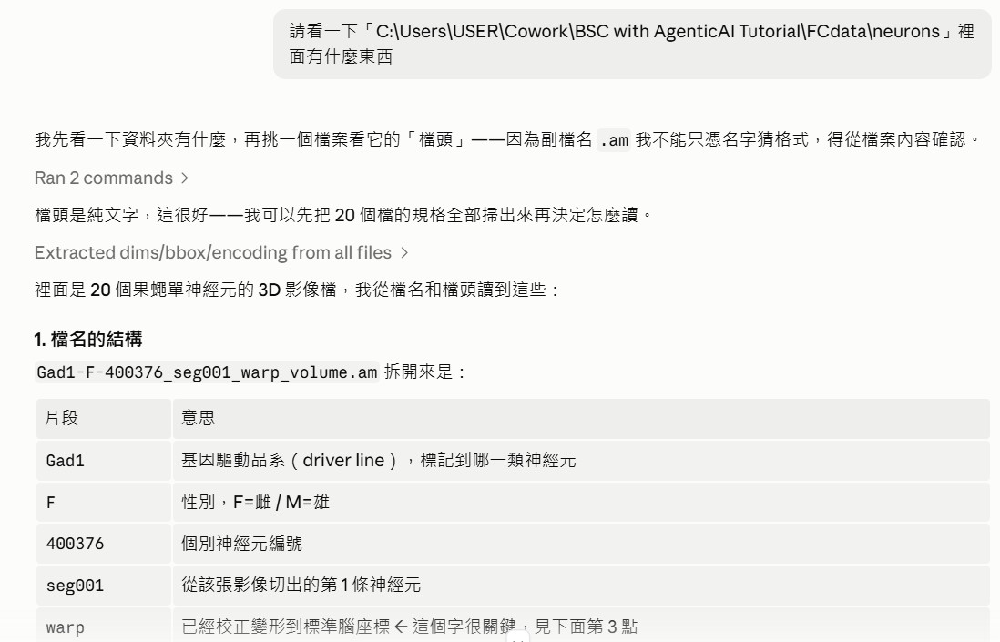
掃完 20 個檔的檔頭，AI 提出三個發現。這三件事決定了後面所有做法：
| 發現 | 怎麼看出來的 | 為什麼重要 |
|---|---|---|
| ① 格式與內容 AmiraMesh 2.1，16-bit 灰階體積，HxZip 壓縮 | 檔頭第一行 # AmiraMesh BINARY-LITTLE-ENDIAN 2.1 直接寫明 | 知道要怎麼解碼，也知道這是 Amira／Avizo 的原生格式 |
| ② 共用同一個座標系 三軸 voxel 間距都剛好是 1.0 | 把 BoundingBox 跨距除以格點數：(138.026−(−148.974)) ÷ (288−1) = 1.0 | 20 個體積可以直接疊在同一個空間，不必再做對位——這是後面 napari 那張圖的前提 |
| ③ 資料極度稀疏 格點數差 7 倍，壓縮後檔案卻一樣大 | 最小的 850 萬 voxel、最大的 6200 萬 voxel，壓縮後都是 760–820 KB | 代表絕大多數 voxel 是 0。後面兩個效能關鍵決定都建立在這件事上 |
HxZip 是不是標準 zlib？② 數值分佈長什麼樣？第一個用一行程式驗掉——解壓後得到 8,547,651 個 voxel，跟檔頭寫的 153×308×161 完全吻合，格式假設成立。第二個查出數值是 0–4095、非零只佔 2–4%。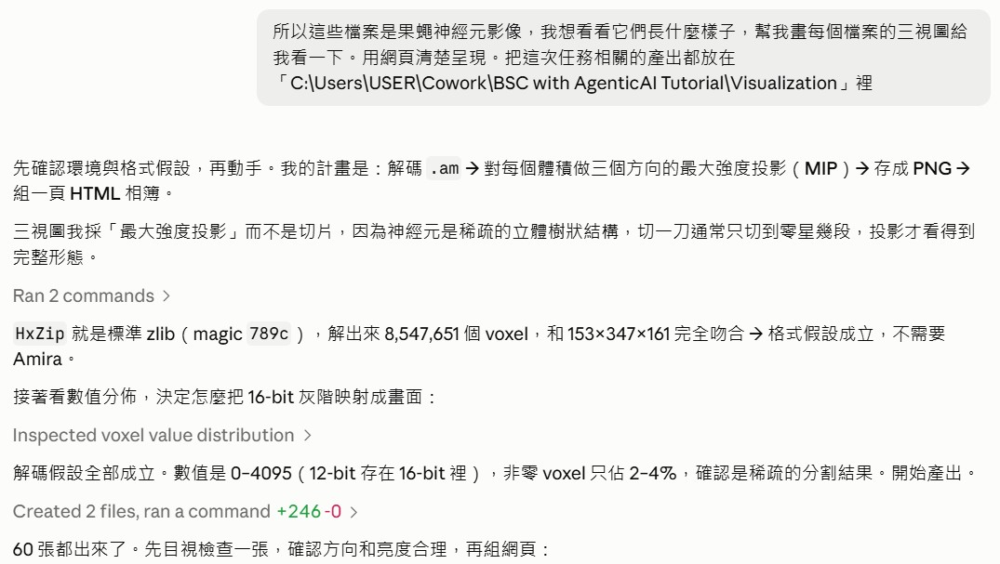
AI 主動解釋了它的繪圖選擇——這個選擇直接來自「資料很稀疏」這個發現：
三視圖我採「最大強度投影」而不是切片，因為神經元是稀疏的立體樹狀結構，切一刀通常只切到零星幾段，投影才看得到完整形態。
接著它訂了三個影像處理參數，每個都有理由：以非零值的 99.5 百分位當白點（避免單一極亮體素壓掉整張圖）、套 gamma 0.5 提亮暗部（否則只看得到主幹）、用 inferno 色階上色（亮黃＝訊號強）。60 張投影圖一次產出。
amread.py（讀檔）＋ render_mip.py（算圖）。然後在組網頁前先自己看一張圖確認方向與亮度合理——它挑了 TH-F-000020，看到胞體、主神經突與兩叢樹突，判定解碼正確才繼續。build_page.py 把圖組成相簿——同樣刻意跟算圖分開：「算圖很慢（要解壓 20 個上百 MB 的體積），但排版常常要改。分開之後改版面只要重跑這支，幾毫秒就好。」接著把網頁實際開起來驗證：確認 60 張圖全部載入無破圖、三欄版面在寬螢幕正常、篩選與放大功能可用、console 沒有錯誤。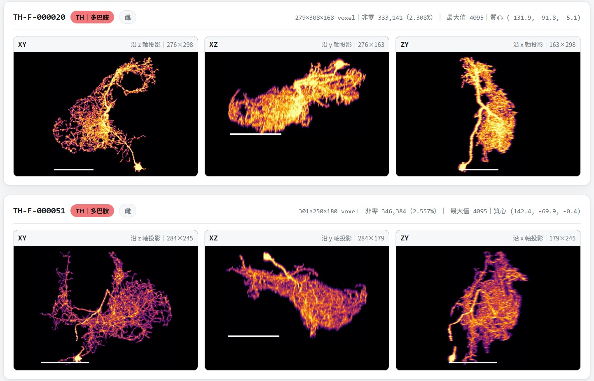
這是整段協作資訊含量最高的一句話。使用者沒有說「幫我修好」，而是問「為什麼」。
probe_axes.py，用兩個指標分別量測三個軸。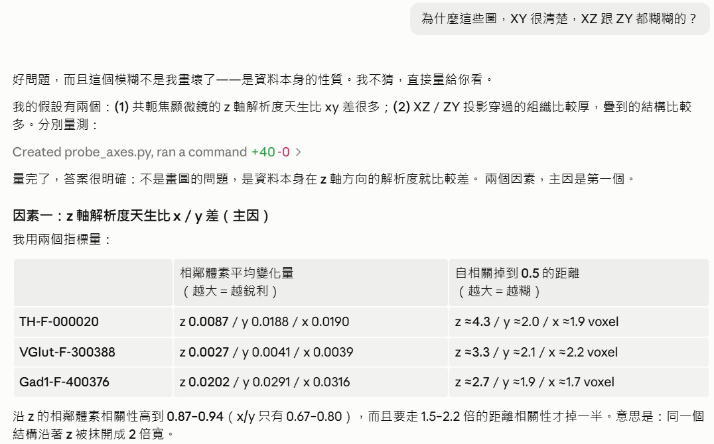
量測結果（節錄 TH-F-000020）：
| 指標 | 沿 z | 沿 y | 沿 x | 怎麼讀 |
|---|---|---|---|---|
| 相鄰體素平均變化量 | 0.0087 | 0.0188 | 0.0190 | 越大＝越銳利。z 只有其他兩軸的一半 |
| 自相關掉到 0.5 的距離 | ≈4.3 | ≈2.0 | ≈1.9 voxel | 越大＝越糊。同一結構沿 z 被抹開成兩倍寬 |
結論分成兩個因素：
Gad1-F-400376 的 ZY 方向每個畫面像素疊了 35.2 個體素，是 XY 的 2.6 倍，自然糊成一團。scipy.ndimage.rotate 旋轉整個 3D 陣列，但最大的檔有 6200 萬個體素，乘上 36 個角度 × 20 個神經元「會跑到天荒地老」。因為資料只有 0.5–4% 非零，它改成把非零體素當點雲：取出約 30 萬個點 → 旋轉這些點 → 投影取最大值。正交投影下兩者數學上等價，但快了兩個數量級。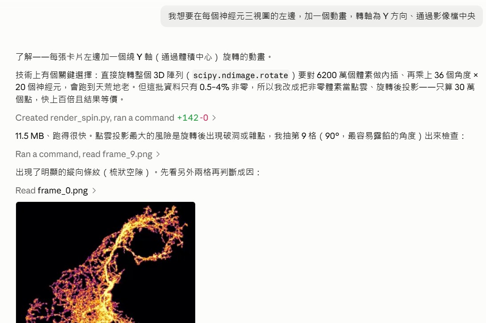
它還用了一個小技巧來取最大值：先把所有點依強度由小到大排序，投影時直接覆蓋寫入，後寫的蓋掉先寫的，最後留下的自然是最大值——比 np.maximum.at 快很多。20 段動畫全部產完不到兩分鐘。
第一版動畫產出後，AI 主動說「點雲投影最大的風險是旋轉後出現破洞或雜點」，於是抽第 9 格（90°，最容易露餡的角度）出來檢查——結果真的出事了：
✗ 修正前（90°）
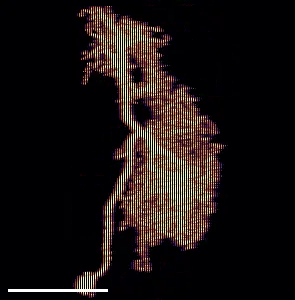
✓ 修正後（90°）
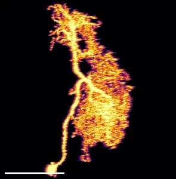
np.rint 用的是銀行家捨入（.5 進位到最近的偶數）。當格點數是偶數時，體積中心會是 83.5 這種半整數；旋轉到 90° 時每個點的座標剛好都落在 .5，於是全部被捨入到偶數欄——奇數欄永遠沒人寫入，就成了梳狀條紋。改用 floor(x + 0.5)（固定方向的四捨五入、沒有平手問題）即可解決，而且不犧牲銳利度。.5 的平手。隨便挑個 45° 檢查根本看不出來。修完之後 AI 實測五個角度，確認空欄比例全部是 0.0% 才算數。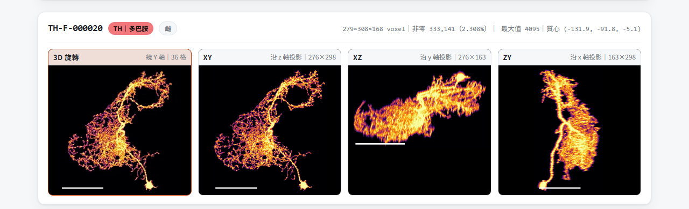
.am 是 Amira／Avizo 的原生格式，商業軟體），然後做了一件很聰明的事——直接掃描這台機器，看實際裝了什麼。結果發現使用者早就有 Avizo 8.1.1，以及 ParaView 6.0.1、napari、pyvista。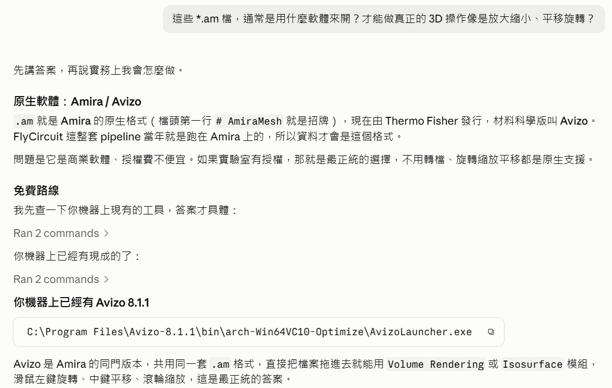
還有一個有趣的細節：檔頭裡的原始路徑寫著 /disk/sourceData/data2014_a12/，而 Avizo 8.1.1 正好是 2014 年前後的版本——這批資料很可能就是用這台機器上的這套軟體產生的。
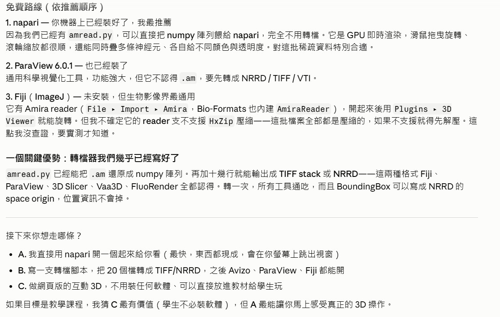
scipy.ndimage／scikit-image，napari 負責隨時把中間結果叫出來看。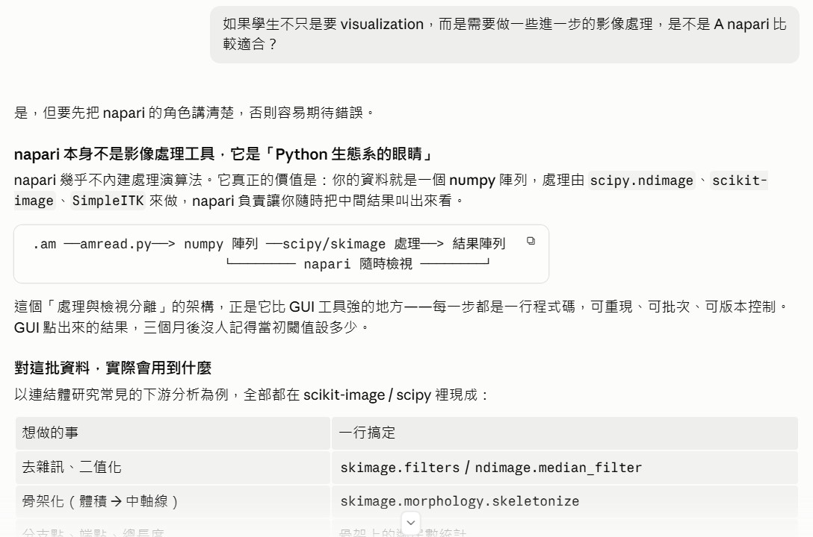
它也給了兩個誠實的但書：不寫程式的人會卡住（那時 Fiji 更友善）、napari 是桌面應用不適合無人值守的批次流程。最後才給建議——而且理由扣回這個系列的核心：
GUI 工具有個致命限制：agent 沒辦法幫你點選單。但 Python 腳本可以由 agent 寫、由 agent 跑、由 agent 除錯，學生看得到程式碼也看得到結果——教學迴路是完整的。
napari.Viewer() 會直接報錯。這是 napari 的常見坑——pip install napari 預設不含 GUI 後端。它選了 PyQt6，理由是它的 wheel 是 abi3（cp39-abi3），對使用者的 Python 3.14 相容性最好。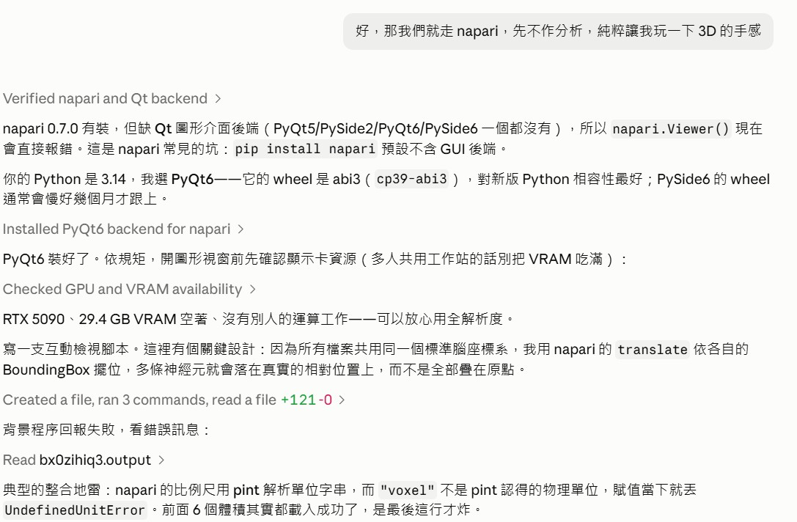
viewer.scale_bar.unit = "voxel"。原因是 napari 的比例尺用 pint 這個物理單位套件解析字串，而 "voxel" 不是它認得的單位，賦值當下就丟 UndefinedUnitError。六個體積其實都已經載入成功了，是最後那一行才炸。拿掉單位字串即可——比例尺照樣顯示數字。修好之後視窗順利開啟。這裡有一個從第 2 段就埋下的伏筆終於發揮作用——因為所有檔案共用同一個標準腦座標系，AI 用 napari 的 translate 依各自的 BoundingBox 擺位，六條神經元落在真實的相對位置上，而不是全部疊在原點：
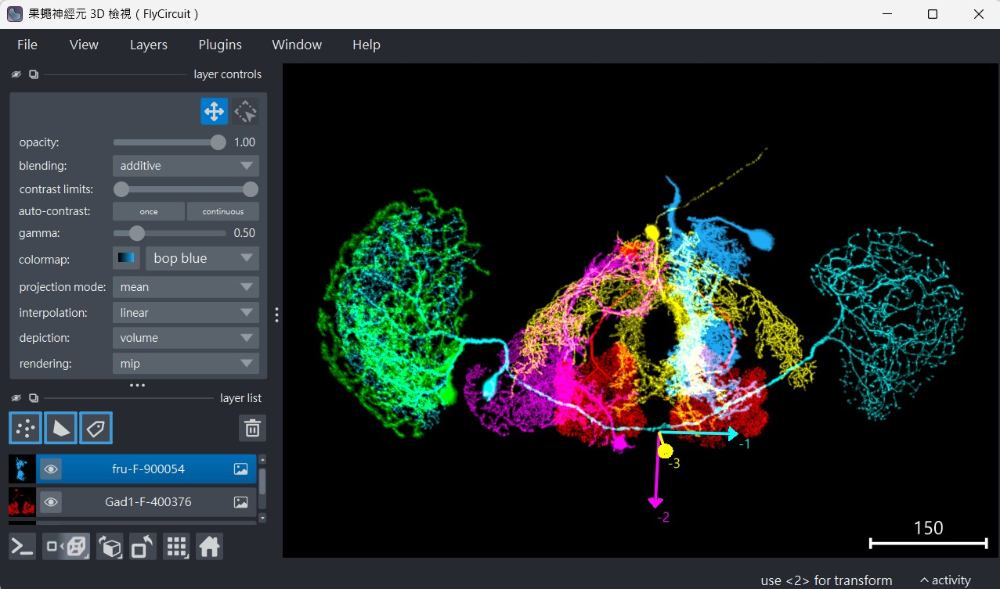
實際操作起來是這樣（左鍵拖曳旋轉、滾輪縮放、Shift＋左鍵平移）：
tutorial-episode-production Skill——一套寫好的標準作業流程，規定了一集教材＝教學文件 ＋ 截圖 ＋ 影片 ＋ 測驗 ＋ 上架，以及彼此的依賴順序。AI 依此讀取前兩集的版型、盤點使用者已經拍好的截圖、產生成品畫面，然後才動筆寫這份文件。你現在讀的就是產物。把上面的過程整理成可以照抄的做法。每一條都連回實際發生的段落。
| 實踐 | 對應段落 | 為什麼重要 |
|---|---|---|
| 第一句話用來勘查，不要求產出 | 1 | 先搞清楚手上是什麼，後面每一步都會順。省下的返工遠多於這一句的成本。 |
| 要求它從檔案內容確認格式，不要憑副檔名猜 | 1 | 副檔名會騙人。檔頭、magic number 才是事實。 |
| 不要從一個樣本外推 | 2 | 掃過全部 20 個檔，才發現「共用座標系」與「極度稀疏」這兩件關鍵事實。 |
| 對矛盾的線索有反應 | 2 | 「格點差七倍、檔案一樣大」這個不對勁，就是稀疏性的線索。 |
| 動手前先講假設與驗證方式 | 3 | 「解出來的 voxel 數要跟檔頭吻合」是可檢查的；「應該可以」不是。 |
| 讓資料性質決定演算法 | 4、8 | 同一個「稀疏」發現，先後推出了 MIP 與點雲兩個關鍵決定。 |
| 把慢的計算與快的排版分開 | 5 | 算圖要幾分鐘、改版面要幾毫秒。分成兩支程式，迭代速度差幾十倍。 |
| 要它真的把成品打開來驗 | 5 | 載入狀態、版面、console 錯誤都要實際量，不能用「寫完了」代替。 |
| 問「為什麼」，並要求量化 | 6 | 能量化的解釋才驗證得了，也才會發現「這救不回來」。 |
| 接受「做不到」的答案 | 7 | 硬做一個看起來變清楚的結果，在科學上是有害的。 |
| 驗證專挑退化情況 | 9 | 0°／90°／180° 才會現形的 bug，測 45° 永遠測不到。 |
| 先盤點環境再開工 | 10、12 | 查出機器上已有 Avizo；查出 VRAM 餘量才決定用全解析度。 |
| 要它標出「沒查證」的部分 | 10 | 「Fiji 支不支援 HxZip 我不確定」比含糊帶過可信得多。 |
| 岔路讓它攤開選項，不要替你猜 | 10 | A／B／C 三條路各有代價，該由你決定。 |
| 動到任務範圍外的檔案要先講 | 5 | 「純新增，不動原有那條」——讓你知道它碰了什麼。 |
| 檔案 | 做什麼 | 關鍵設計 |
|---|---|---|
amread.py | 讀 AmiraMesh .am，還原成 numpy 陣列 | 解析純文字檔頭、zlib 解壓、算出 voxel 間距 |
render_mip.py | 算三視圖投影，輸出 60 張 PNG | 先在 3D 裡裁掉空白，三個視圖才是同一塊區域 |
render_spin.py | 算繞 Y 軸旋轉動畫，輸出 20 段 WebP | 點雲 splatting；依強度排序後覆蓋寫入以取最大值 |
build_page.py | 把圖組成一頁互動相簿 | 與算圖分離，改版面只要幾毫秒 |
view3d.py | 在 napari 裡互動檢視 | 用 BoundingBox 當 translate，把神經元擺回標準腦座標 |
| 項目 | 數量 |
|---|---|
| 處理的神經元 | 20 條（6 個 driver line，19 雌 1 雄） |
| 解碼的體積資料 | 最大 842×346×214 ＝ 約 6200 萬 voxel |
| 三視圖投影 | 60 張 PNG |
| 旋轉動畫 | 20 段 WebP，各 36 格，合計 11.6 MB |
| 使用者說的話 | 7 句 |
| AI 自己抓到的 bug | 2 個（梳狀條紋、pint 單位） |
AI 的第一句話是「.am 我不能只憑名字猜格式，得從檔案內容確認」。結果檔頭是純文字，尺寸、座標、壓縮方式全寫在裡面——五分鐘就搞定了本來以為要買軟體才能開的檔案。
掃過全部 20 個檔，才看得出「三軸 voxel 間距都是 1.0」這種一個樣本看不出來的規律。這個發現在後面兩次（做動畫、進 napari）救了場。
「格點數差七倍，壓縮後檔案卻一樣大」——AI 沒有放過這個矛盾，追出了「資料極度稀疏」。這件事後來決定了兩個關鍵演算法選擇。
「HxZip 應該就是 zlib」是假設；「解出 8,547,651 個 voxel，和 153×347×161 完全吻合」是證明。要求 AI 給你後者，不要接受前者。
稀疏 → 用 MIP 而不是切片；稀疏 → 用點雲而不是旋轉整個陣列。第二個選擇讓 20 段動畫從「跑到天荒地老」變成「不到兩分鐘」。
「為什麼比較糊？」的正確回答不是一段光學原理，而是「沿 z 的自相關要走 1.5–2.2 倍的距離才掉一半」。能量化才驗證得了。
「資訊在拍攝當下就沒被記錄下來，任何銳化都只是把雜訊放大」——願意這樣講的 AI，它說「做到了」的時候你才敢信。
梳狀條紋只在 0°／90°／180°／270° 出現。AI 挑 90° 檢查是有意識的選擇（「最容易露餡的角度」），不是運氣。修完還實測五個角度確認空欄比例是 0。
napari 沒把 Qt 裝齊、pint 不認得 "voxel"——兩個都不是演算法問題，讀文件也預防不了。所以先跑一次最小可行版本永遠值得。
查出機器上早就有 Avizo（省下一輪冤枉路）、查出 GPU 有 29.4 GB VRAM 空著且沒有別人的工作在跑（才敢用全解析度）。在多人共用的工作站上，這一步是基本禮貌。
這一集從頭到尾，使用者沒有寫過一行程式，也沒有事先知道 .am 是什麼格式。七句話裡有四句是「問問題」。
如果你手上也有一批不知道怎麼下手的資料，可以照這個順序試：
下一步如果要往影像分析走（骨架化、量分支數與總長度、算兩條神經元的空間重疊來估計潛在連結），這批資料已經準備好了——它們共用同一個標準腦座標系，兩個 numpy 陣列可以直接做布林運算。那會是另一集的題目。